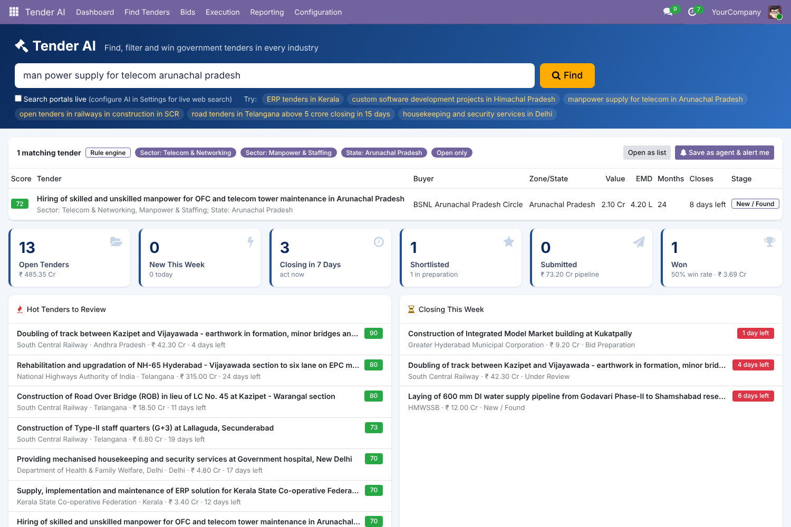
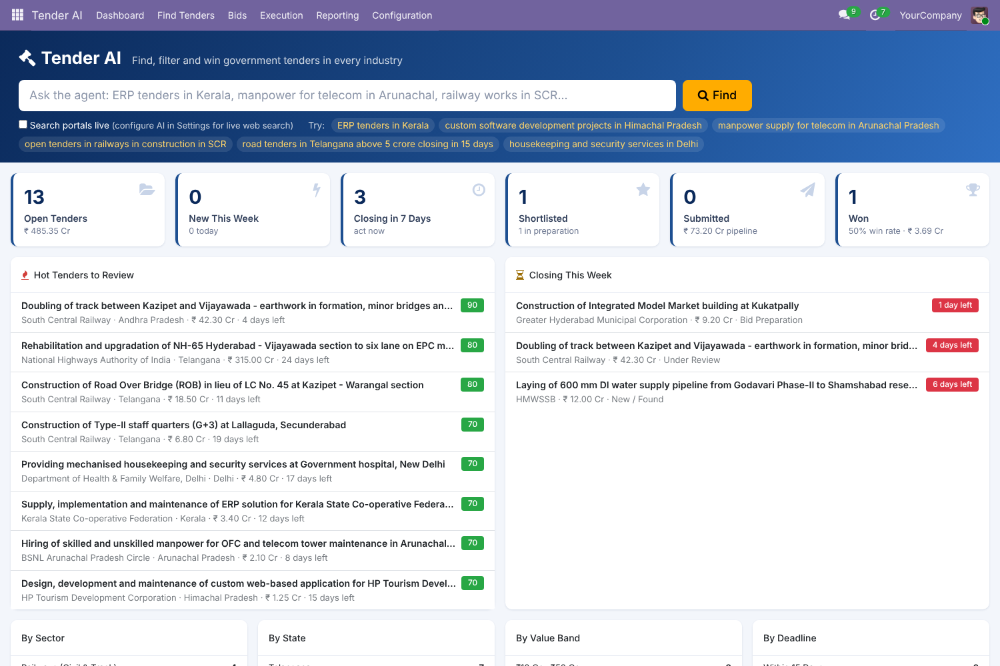
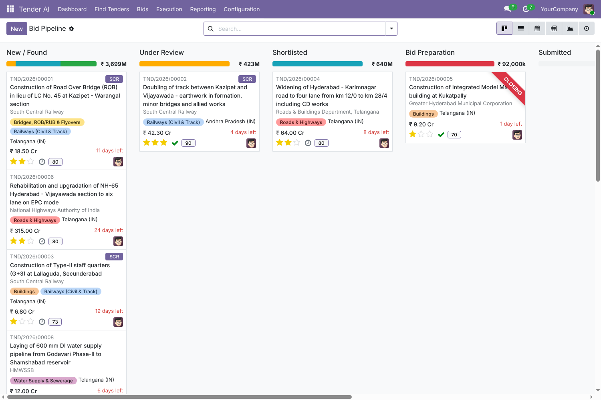
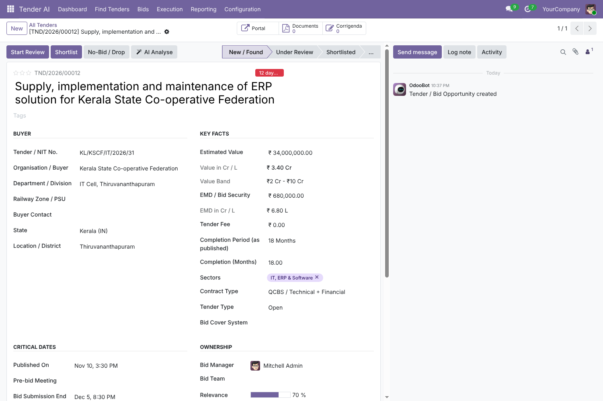

<section style="background-color:#ffffff; color:#1f2a44; font-family:Arial, Helvetica, sans-serif; padding:0; margin:0;">
<div style="max-width:1120px; margin:0 auto; background-color:#ffffff; color:#1f2a44;">

    <!-- ================= HERO ================= -->
    <div style="background-color:#0b2a5b; background-image:linear-gradient(120deg,#0b2a5b 0%,#1d4f91 65%,#2f6fc2 100%); color:#ffffff; padding:44px 40px; border-radius:14px; text-align:center;">
        <p style="color:#8fd3f4; background-color:transparent; font-size:14px; letter-spacing:3px; margin:0 0 10px 0; font-weight:bold;">ODOO 19 &nbsp;|&nbsp; COMMUNITY AND ENTERPRISE</p>
        <h1 style="color:#ffffff; background-color:transparent; font-size:40px; line-height:1.2; margin:0 0 12px 0; font-weight:bold;">ZivoIT Tender AI</h1>
        <h2 style="color:#ffd56a; background-color:transparent; font-size:22px; line-height:1.4; margin:0 0 18px 0; font-weight:normal;">An AI tender agent for your sales team: it finds hot, new and open government tenders in <b style="color:#ffd56a;">every industry</b> and runs the whole bid process inside Odoo.</h2>
        <p style="color:#e6eefb; background-color:transparent; font-size:17px; line-height:1.6; margin:0 auto; max-width:860px;">Ask in plain English: <i style="color:#ffffff;">"ERP tenders in Kerala"</i>, <i style="color:#ffffff;">"custom software development projects in Himachal Pradesh"</i>, <i style="color:#ffffff;">"manpower supply for telecom in Arunachal Pradesh"</i> or <i style="color:#ffffff;">"open tenders in railways construction in SCR"</i>. The agent understands the request, searches the portals, filters, scores and alerts you, then takes the tender from shortlist to bid, result and execution.</p>
    </div>

    <!-- ================= KEY NUMBERS ================= -->
    <table style="width:100%; border-collapse:separate; border-spacing:12px; margin-top:18px; background-color:#ffffff;">
        <tr>
            <td style="background-color:#eef4fc; color:#0b2a5b; border-left:5px solid #1d4f91; border-radius:8px; padding:16px; text-align:center; width:20%; vertical-align:top;"><div style="font-size:30px; font-weight:bold; color:#0b2a5b;">21</div><div style="font-size:14px; color:#33415c;">sectors in 5 industry groups</div></td>
            <td style="background-color:#eef4fc; color:#0b2a5b; border-left:5px solid #1d4f91; border-radius:8px; padding:16px; text-align:center; width:20%; vertical-align:top;"><div style="font-size:30px; font-weight:bold; color:#0b2a5b;">36</div><div style="font-size:14px; color:#33415c;">Indian states &amp; UTs understood</div></td>
            <td style="background-color:#eef4fc; color:#0b2a5b; border-left:5px solid #1d4f91; border-radius:8px; padding:16px; text-align:center; width:20%; vertical-align:top;"><div style="font-size:30px; font-weight:bold; color:#0b2a5b;">6</div><div style="font-size:14px; color:#33415c;">ways to bring tenders in</div></td>
            <td style="background-color:#eef4fc; color:#0b2a5b; border-left:5px solid #1d4f91; border-radius:8px; padding:16px; text-align:center; width:20%; vertical-align:top;"><div style="font-size:30px; font-weight:bold; color:#0b2a5b;">10</div><div style="font-size:14px; color:#33415c;">stage bid pipeline</div></td>
            <td style="background-color:#eef4fc; color:#0b2a5b; border-left:5px solid #1d4f91; border-radius:8px; padding:16px; text-align:center; width:20%; vertical-align:top;"><div style="font-size:30px; font-weight:bold; color:#0b2a5b;">0</div><div style="font-size:14px; color:#33415c;">extra Odoo apps to buy (Community ready)</div></td>
        </tr>
    </table>

    <!-- ================= WHY USE ================= -->
    <div style="background-color:#ffffff; color:#1f2a44; padding:24px 10px 6px 10px;">
        <h2 style="color:#0b2a5b; background-color:transparent; font-size:28px; margin:0 0 6px 0;">Why use this module?</h2>
        <p style="color:#4a5670; background-color:transparent; font-size:16px; margin:0 0 16px 0;">Tender teams lose business in the same few ways. Tender AI is built to close each gap.</p>
        <table style="width:100%; border-collapse:collapse; background-color:#ffffff;">
            <tr style="background-color:#0b2a5b;">
                <th style="color:#ffffff; background-color:#0b2a5b; padding:12px; text-align:left; font-size:15px; width:40%;">The problem today</th>
                <th style="color:#ffffff; background-color:#0b2a5b; padding:12px; text-align:left; font-size:15px;">What Tender AI does</th>
            </tr>
            <tr style="background-color:#ffffff;"><td style="color:#1f2a44; background-color:#ffffff; padding:12px; border-bottom:1px solid #dde3ee;">Staff check dozens of portals (CPPP, GeM, IREPS, every state portal) by hand every day.</td><td style="color:#1f2a44; background-color:#ffffff; padding:12px; border-bottom:1px solid #dde3ee;">Tender Agents search on a schedule and bring every match into one Odoo list.</td></tr>
            <tr style="background-color:#f6f8fc;"><td style="color:#1f2a44; background-color:#f6f8fc; padding:12px; border-bottom:1px solid #dde3ee;">Keyword alerts flood the inbox with irrelevant tenders.</td><td style="color:#1f2a44; background-color:#f6f8fc; padding:12px; border-bottom:1px solid #dde3ee;">Sector, state, zone, value, EMD, completion-period and deadline filters, plus exclusions and a 0-100 relevance score.</td></tr>
            <tr style="background-color:#ffffff;"><td style="color:#1f2a44; background-color:#ffffff; padding:12px; border-bottom:1px solid #dde3ee;">Good tenders are found too late to prepare a bid.</td><td style="color:#1f2a44; background-color:#ffffff; padding:12px; border-bottom:1px solid #dde3ee;">Instant alerts, daily digest e-mail, "closing in 3 / 7 days" views and reminders 7, 3 and 1 days before closing.</td></tr>
            <tr style="background-color:#f6f8fc;"><td style="color:#1f2a44; background-color:#f6f8fc; padding:12px; border-bottom:1px solid #dde3ee;">Bid / no-bid decisions are made on gut feel.</td><td style="color:#1f2a44; background-color:#f6f8fc; padding:12px; border-bottom:1px solid #dde3ee;">Weighted checklists with mandatory criteria and an AI summary of scope, eligibility and risks.</td></tr>
            <tr style="background-color:#ffffff;"><td style="color:#1f2a44; background-color:#ffffff; padding:12px; border-bottom:1px solid #dde3ee;">Pricing, EMD, corrigenda and results live in scattered spreadsheets.</td><td style="color:#1f2a44; background-color:#ffffff; padding:12px; border-bottom:1px solid #dde3ee;">BOQ / price-schedule costing, EMD &amp; bank-guarantee tracking, corrigenda history and L1 / L2 competitor analysis on one record.</td></tr>
            <tr style="background-color:#f6f8fc;"><td style="color:#1f2a44; background-color:#f6f8fc; padding:12px; border-bottom:1px solid #dde3ee;">Won tenders are re-typed into CRM and project tools.</td><td style="color:#1f2a44; background-color:#f6f8fc; padding:12px; border-bottom:1px solid #dde3ee;">One click creates the CRM opportunity and an Odoo Project with a task per item, then running-account bills.</td></tr>
        </table>
    </div>

    <!-- ================= HOW IT WORKS ================= -->
    <div style="background-color:#ffffff; color:#1f2a44; padding:24px 10px 6px 10px;">
        <h2 style="color:#0b2a5b; background-color:transparent; font-size:28px; margin:0 0 14px 0;">How it works</h2>
        <table style="width:100%; border-collapse:separate; border-spacing:8px; background-color:#ffffff;">
            <tr>
                <td style="background-color:#ffc43d; color:#0b2a5b; text-align:center; padding:14px 6px; border-radius:8px; font-weight:bold; font-size:15px;">1. Ask</td>
                <td style="background-color:#1d4f91; color:#ffffff; text-align:center; padding:14px 6px; border-radius:8px; font-weight:bold; font-size:15px;">2. Find</td>
                <td style="background-color:#1d4f91; color:#ffffff; text-align:center; padding:14px 6px; border-radius:8px; font-weight:bold; font-size:15px;">3. Filter &amp; score</td>
                <td style="background-color:#1d4f91; color:#ffffff; text-align:center; padding:14px 6px; border-radius:8px; font-weight:bold; font-size:15px;">4. Alert</td>
                <td style="background-color:#1d4f91; color:#ffffff; text-align:center; padding:14px 6px; border-radius:8px; font-weight:bold; font-size:15px;">5. Shortlist</td>
                <td style="background-color:#1d4f91; color:#ffffff; text-align:center; padding:14px 6px; border-radius:8px; font-weight:bold; font-size:15px;">6. Bid</td>
                <td style="background-color:#1d4f91; color:#ffffff; text-align:center; padding:14px 6px; border-radius:8px; font-weight:bold; font-size:15px;">7. Win &amp; execute</td>
            </tr>
        </table>
        <h3 style="color:#0b2a5b; background-color:transparent; font-size:20px; margin:18px 0 8px 0;">Plain-language requests the agent understands</h3>
        <table style="width:100%; border-collapse:collapse; background-color:#ffffff;">
            <tr>
                <th style="color:#ffffff; background-color:#1d4f91; padding:10px; text-align:left; font-size:14px;">You type</th>
                <th style="color:#ffffff; background-color:#1d4f91; padding:10px; text-align:left; font-size:14px;">The agent understands</th>
            </tr>
            <tr><td style="color:#1f2a44; background-color:#ffffff; padding:10px; border-bottom:1px solid #dde3ee;">ERP tenders in Kerala</td><td style="color:#1f2a44; background-color:#ffffff; padding:10px; border-bottom:1px solid #dde3ee;">Sector: IT, ERP &amp; Software &middot; State: Kerala &middot; Keyword: ERP</td></tr>
            <tr><td style="color:#1f2a44; background-color:#f6f8fc; padding:10px; border-bottom:1px solid #dde3ee;">custom software development projects in Himachal Pradesh</td><td style="color:#1f2a44; background-color:#f6f8fc; padding:10px; border-bottom:1px solid #dde3ee;">Sector: IT, ERP &amp; Software &middot; State: Himachal Pradesh &middot; Keywords: custom, development</td></tr>
            <tr><td style="color:#1f2a44; background-color:#ffffff; padding:10px; border-bottom:1px solid #dde3ee;">man power supply for telecom arunachal pradesh</td><td style="color:#1f2a44; background-color:#ffffff; padding:10px; border-bottom:1px solid #dde3ee;">Sectors: Manpower + Telecom (tenders matching both rank first) &middot; State: Arunachal Pradesh</td></tr>
            <tr><td style="color:#1f2a44; background-color:#f6f8fc; padding:10px; border-bottom:1px solid #dde3ee;">open tenders in railways construction in SCR</td><td style="color:#1f2a44; background-color:#f6f8fc; padding:10px; border-bottom:1px solid #dde3ee;">Railway zone: South Central Railway &middot; Sector: Railways &middot; Open tenders only</td></tr>
            <tr><td style="color:#1f2a44; background-color:#ffffff; padding:10px; border-bottom:1px solid #dde3ee;">road tenders in Telangana above 5 crore closing in 15 days</td><td style="color:#1f2a44; background-color:#ffffff; padding:10px; border-bottom:1px solid #dde3ee;">Sector: Roads &middot; State: Telangana &middot; Minimum value &#8377;5 Cr &middot; Closing within 15 days</td></tr>
            <tr><td style="color:#1f2a44; background-color:#f6f8fc; padding:10px; border-bottom:1px solid #dde3ee;">housekeeping and security services in Delhi excluding canteen</td><td style="color:#1f2a44; background-color:#f6f8fc; padding:10px; border-bottom:1px solid #dde3ee;">Sectors: Facility Management + Security &middot; State: Delhi &middot; Excluding: canteen</td></tr>
        </table>
        <p style="color:#4a5670; background-color:transparent; font-size:14px; margin:8px 0 0 0;">It understands Lakh / Crore values, common misspellings (Telengana, Kerela), cities and departments (Itanagar, Shimla, GHMC), railway zones and PSUs, and phrases such as "closing this week" or "published in the last 3 days".</p>
    </div>

    <!-- ================= SCREENSHOTS ================= -->
    <div style="background-color:#ffffff; color:#1f2a44; padding:24px 10px 6px 10px;">
        <h2 style="color:#0b2a5b; background-color:transparent; font-size:28px; margin:0 0 6px 0;">Ask the agent from the dashboard</h2>
        <p style="color:#4a5670; background-color:transparent; font-size:16px; margin:0 0 12px 0;">Type a request, see what the agent understood as chips, and get ranked results with the reason for each match. Save it as an agent with one click to be alerted about future tenders.</p>
        
        <h2 style="color:#0b2a5b; background-color:transparent; font-size:28px; margin:30px 0 6px 0;">Every industry, one dashboard</h2>
        <p style="color:#4a5670; background-color:transparent; font-size:16px; margin:0 0 12px 0;">Open-tender value, new and closing tenders, shortlist, pipeline and win rate. Breakdowns by sector, state, value band and deadline are one click away.</p>
        
        <h2 style="color:#0b2a5b; background-color:transparent; font-size:28px; margin:30px 0 6px 0;">Bid pipeline</h2>
        <p style="color:#4a5670; background-color:transparent; font-size:16px; margin:0 0 12px 0;">Kanban from New to Won, with deadline colour bars, values in Crore / Lakh, railway-zone badges, priority stars and a "Closing" ribbon.</p>
        
        <h2 style="color:#0b2a5b; background-color:transparent; font-size:28px; margin:30px 0 6px 0;">Complete tender record</h2>
        <p style="color:#4a5670; background-color:transparent; font-size:16px; margin:0 0 12px 0;">Buyer, key facts, critical dates, AI insights, Bid / No-Bid checklist, BOQ &amp; costing, EMD &amp; submission, corrigenda, competitors and results in one form, with the full Odoo chatter.</p>
        
    </div>

    <!-- ================= FEATURES ================= -->
    <div style="background-color:#ffffff; color:#1f2a44; padding:24px 10px 6px 10px;">
        <h2 style="color:#0b2a5b; background-color:transparent; font-size:28px; margin:0 0 14px 0;">Full feature list</h2>
        <table style="width:100%; border-collapse:separate; border-spacing:12px; background-color:#ffffff;">
            <tr>
                <td style="vertical-align:top; width:50%; background-color:#f6f8fc; color:#1f2a44; border-radius:10px; padding:18px; border-top:4px solid #1d4f91;">
                    <h3 style="color:#0b2a5b; background-color:transparent; font-size:19px; margin:0 0 8px 0;">1. Find tenders</h3>
                    <ul style="color:#1f2a44; background-color:transparent; font-size:15px; line-height:1.6; margin:0; padding-left:20px;">
                        <li style="color:#1f2a44;">AI web-search agents limited to official portals: CPPP, GeM, IREPS, NHAI / MoRTH and all state e-procurement portals (gov.in / nic.in)</li>
                        <li style="color:#1f2a44;">Works with Anthropic Claude or OpenAI; a built-in rule engine works without any AI key</li>
                        <li style="color:#1f2a44;">RSS / Atom feed, HTML listing-page and JSON API connectors for any portal or paid aggregator, with field mapping</li>
                        <li style="color:#1f2a44;">Tender-alert e-mails (portals, GeM, aggregators) become tenders automatically</li>
                        <li style="color:#1f2a44;">Excel / CSV import through the standard Odoo importer</li>
                        <li style="color:#1f2a44;">Duplicate detection across sources; extended deadlines picked up automatically</li>
                        <li style="color:#1f2a44;">Fetch logs per source and per agent; a failing portal never stops the others</li>
                    </ul>
                </td>
                <td style="vertical-align:top; width:50%; background-color:#f6f8fc; color:#1f2a44; border-radius:10px; padding:18px; border-top:4px solid #1d4f91;">
                    <h3 style="color:#0b2a5b; background-color:transparent; font-size:19px; margin:0 0 8px 0;">2. Understand &amp; classify</h3>
                    <ul style="color:#1f2a44; background-color:transparent; font-size:15px; line-height:1.6; margin:0; padding-left:20px;">
                        <li style="color:#1f2a44;">21 sectors in 5 groups: Works (roads, buildings, bridges, railways, water, irrigation, electrical, metro, real estate), IT &amp; Telecom, Services (manpower, security, housekeeping, maintenance, vehicles, training, media), Goods (supplies, healthcare) and Consultancy</li>
                        <li style="color:#1f2a44;">Sector keyword dictionaries you can edit to suit your business</li>
                        <li style="color:#1f2a44;">All 36 states &amp; UTs, plus 23 railway zones and railway PSUs</li>
                        <li style="color:#1f2a44;">Reads Indian amounts (&#8377; 3,45,00,000 / 12.5 Crore / 45 Lakh), dates and durations (540 days = 18 months)</li>
                        <li style="color:#1f2a44;">Detects contract type: item rate, percentage, lump sum, EPC, HAM, BOT, QCBS, rate contract, service contract</li>
                    </ul>
                </td>
            </tr>
            <tr>
                <td style="vertical-align:top; background-color:#f6f8fc; color:#1f2a44; border-radius:10px; padding:18px; border-top:4px solid #1d4f91;">
                    <h3 style="color:#0b2a5b; background-color:transparent; font-size:19px; margin:0 0 8px 0;">3. Filter, segregate &amp; alert</h3>
                    <ul style="color:#1f2a44; background-color:transparent; font-size:15px; line-height:1.6; margin:0; padding-left:20px;">
                        <li style="color:#1f2a44;">Saved Tender Agents: keywords, exclusions, sectors, states, zones, buyers, contract types</li>
                        <li style="color:#1f2a44;">Price filters (minimum / maximum value, maximum EMD) and timeline filters (completion months, minimum days to prepare, closing within N days, published within N days)</li>
                        <li style="color:#1f2a44;">Grouping by value band, deadline bucket, completion period, sector, industry group, state, zone and buyer</li>
                        <li style="color:#1f2a44;">Relevance score 0-100 with the reason for every match</li>
                        <li style="color:#1f2a44;">Instant Odoo notifications and a daily HTML digest e-mail</li>
                        <li style="color:#1f2a44;">Automatic assign, tag, priority stars and auto-shortlist above a score you set</li>
                        <li style="color:#1f2a44;">Hourly, 6-hourly, daily or weekly schedules; private or team-shared agents</li>
                    </ul>
                </td>
                <td style="vertical-align:top; background-color:#f6f8fc; color:#1f2a44; border-radius:10px; padding:18px; border-top:4px solid #1d4f91;">
                    <h3 style="color:#0b2a5b; background-color:transparent; font-size:19px; margin:0 0 8px 0;">4. Decide &amp; bid</h3>
                    <ul style="color:#1f2a44; background-color:transparent; font-size:15px; line-height:1.6; margin:0; padding-left:20px;">
                        <li style="color:#1f2a44;">10-stage pipeline (kanban, list, calendar of deadlines, pivot, graph, activities)</li>
                        <li style="color:#1f2a44;">Bid / No-Bid checklists: civil works, Indian Railways, IT / ERP / software &amp; telecom, manpower &amp; services, and a general template, chosen automatically by sector</li>
                        <li style="color:#1f2a44;">Mandatory criteria block bid preparation if not met</li>
                        <li style="color:#1f2a44;">AI analysis: summary, scope, eligibility, risks and a Go / Review / No-Go recommendation</li>
                        <li style="color:#1f2a44;">BOQ / price schedule: material, labour, plant and sub-contract rates, overheads, contingency, margin and GST; percentage above or below the estimate</li>
                        <li style="color:#1f2a44;">EMD / bank guarantee (online, BG, FDR, DD, exempt), validity follow-up and refund tracking</li>
                        <li style="color:#1f2a44;">Corrigenda update deadlines and values and notify the bid team</li>
                        <li style="color:#1f2a44;">Deadline reminders (7 / 3 / 1 days, configurable) and a printable Tender Brief PDF</li>
                    </ul>
                </td>
            </tr>
            <tr>
                <td style="vertical-align:top; background-color:#f6f8fc; color:#1f2a44; border-radius:10px; padding:18px; border-top:4px solid #1d4f91;">
                    <h3 style="color:#0b2a5b; background-color:transparent; font-size:19px; margin:0 0 8px 0;">5. Results &amp; learning</h3>
                    <ul style="color:#1f2a44; background-color:transparent; font-size:15px; line-height:1.6; margin:0; padding-left:20px;">
                        <li style="color:#1f2a44;">Record bidders, automatic L1 / L2 ranking, technical qualification and gap to L1</li>
                        <li style="color:#1f2a44;">Won / Lost / No-Bid with reasons; win-rate and pipeline value on the dashboard</li>
                        <li style="color:#1f2a44;">Analysis by state, sector, value band, buyer and bid manager</li>
                    </ul>
                </td>
                <td style="vertical-align:top; background-color:#f6f8fc; color:#1f2a44; border-radius:10px; padding:18px; border-top:4px solid #1d4f91;">
                    <h3 style="color:#0b2a5b; background-color:transparent; font-size:19px; margin:0 0 8px 0;">6. Win &amp; execute</h3>
                    <ul style="color:#1f2a44; background-color:transparent; font-size:15px; line-height:1.6; margin:0; padding-left:20px;">
                        <li style="color:#1f2a44;">CRM opportunity on shortlist (optional), marked won or archived with the result</li>
                        <li style="color:#1f2a44;">Odoo Project created on win, with one task per BOQ / schedule item</li>
                        <li style="color:#1f2a44;">Running Account (RA) bills: measured quantities, retention, GST, TDS, GST-TDS, labour cess and advance recoveries; physical progress on the project</li>
                    </ul>
                </td>
            </tr>
        </table>
    </div>

    <!-- ================= UNIQUE ================= -->
    <div style="background-color:#0b2a5b; color:#ffffff; padding:28px 30px; border-radius:14px; margin:18px 0;">
        <h2 style="color:#ffd56a; background-color:transparent; font-size:28px; margin:0 0 14px 0;">What makes it unique</h2>
        <table style="width:100%; border-collapse:separate; border-spacing:10px; background-color:#0b2a5b;">
            <tr>
                <td style="vertical-align:top; width:33%; background-color:#163c78; color:#ffffff; border-radius:8px; padding:16px;"><b style="color:#ffd56a; font-size:16px;">An agent, not a keyword alert</b><p style="color:#e6eefb; margin:6px 0 0 0; font-size:14px; line-height:1.5;">It understands whole requests (industry, state, zone, value, deadline, exclusions) and explains why each tender matched.</p></td>
                <td style="vertical-align:top; width:33%; background-color:#163c78; color:#ffffff; border-radius:8px; padding:16px;"><b style="color:#ffd56a; font-size:16px;">Made for Indian tendering</b><p style="color:#e6eefb; margin:6px 0 0 0; font-size:14px; line-height:1.5;">Lakh / Crore values, EMD &amp; bank guarantees, MSE exemption, railway zones, GeM, CPPP, IREPS, state portals and RA bills with TDS, GST-TDS and labour cess.</p></td>
                <td style="vertical-align:top; width:33%; background-color:#163c78; color:#ffffff; border-radius:8px; padding:16px;"><b style="color:#ffd56a; font-size:16px;">Every industry</b><p style="color:#e6eefb; margin:6px 0 0 0; font-size:14px; line-height:1.5;">Construction, IT / ERP, telecom, manpower, security, housekeeping, healthcare, supplies, transport, training, media and consultancy in one module.</p></td>
            </tr>
            <tr>
                <td style="vertical-align:top; background-color:#163c78; color:#ffffff; border-radius:8px; padding:16px;"><b style="color:#ffd56a; font-size:16px;">From discovery to execution</b><p style="color:#e6eefb; margin:6px 0 0 0; font-size:14px; line-height:1.5;">One record carries the tender from "found" to bid, result, CRM, project and billing, with no re-typing.</p></td>
                <td style="vertical-align:top; background-color:#163c78; color:#ffffff; border-radius:8px; padding:16px;"><b style="color:#ffd56a; font-size:16px;">Works with or without AI</b><p style="color:#e6eefb; margin:6px 0 0 0; font-size:14px; line-height:1.5;">Use your own Claude or OpenAI key for live web search and analysis. Without a key, the built-in rule engine still parses, classifies, scores and alerts.</p></td>
                <td style="vertical-align:top; background-color:#163c78; color:#ffffff; border-radius:8px; padding:16px;"><b style="color:#ffd56a; font-size:16px;">Your data stays in Odoo</b><p style="color:#e6eefb; margin:6px 0 0 0; font-size:14px; line-height:1.5;">No third-party tender subscription is required. Tenders, prices and results live in your own database, with Odoo access rights.</p></td>
            </tr>
        </table>
    </div>

    <!-- ================= COMPARISON ================= -->
    <div style="background-color:#ffffff; color:#1f2a44; padding:20px 10px 6px 10px;">
        <h2 style="color:#0b2a5b; background-color:transparent; font-size:28px; margin:0 0 6px 0;">How it compares</h2>
        <p style="color:#4a5670; background-color:transparent; font-size:15px; margin:0 0 12px 0;">Compared with the usual ways companies track tenders today.</p>
        <table style="width:100%; border-collapse:collapse; background-color:#ffffff; font-size:14px;">
            <tr>
                <th style="color:#ffffff; background-color:#0b2a5b; padding:11px; text-align:left;">Capability</th>
                <th style="color:#0b2a5b; background-color:#ffc43d; padding:11px; text-align:center;">ZivoIT Tender AI</th>
                <th style="color:#ffffff; background-color:#1d4f91; padding:11px; text-align:center;">Tender alert websites</th>
                <th style="color:#ffffff; background-color:#1d4f91; padding:11px; text-align:center;">Typical Odoo tender apps</th>
                <th style="color:#ffffff; background-color:#1d4f91; padding:11px; text-align:center;">Spreadsheet + e-mail</th>
            </tr>
            <tr><td style="color:#1f2a44; background-color:#ffffff; padding:10px; border-bottom:1px solid #dde3ee;">Finds new public tenders automatically</td><td style="color:#0d7a3a; background-color:#fff8e1; padding:10px; text-align:center; font-weight:bold; border-bottom:1px solid #dde3ee;">Yes</td><td style="color:#0d7a3a; background-color:#ffffff; padding:10px; text-align:center; border-bottom:1px solid #dde3ee;">Yes</td><td style="color:#b3261e; background-color:#ffffff; padding:10px; text-align:center; border-bottom:1px solid #dde3ee;">Rarely</td><td style="color:#b3261e; background-color:#ffffff; padding:10px; text-align:center; border-bottom:1px solid #dde3ee;">No</td></tr>
            <tr><td style="color:#1f2a44; background-color:#f6f8fc; padding:10px; border-bottom:1px solid #dde3ee;">Plain-English requests (AI agent)</td><td style="color:#0d7a3a; background-color:#fff3cd; padding:10px; text-align:center; font-weight:bold; border-bottom:1px solid #dde3ee;">Yes</td><td style="color:#8a5a00; background-color:#f6f8fc; padding:10px; text-align:center; border-bottom:1px solid #dde3ee;">Keywords only</td><td style="color:#b3261e; background-color:#f6f8fc; padding:10px; text-align:center; border-bottom:1px solid #dde3ee;">No</td><td style="color:#b3261e; background-color:#f6f8fc; padding:10px; text-align:center; border-bottom:1px solid #dde3ee;">No</td></tr>
            <tr><td style="color:#1f2a44; background-color:#ffffff; padding:10px; border-bottom:1px solid #dde3ee;">Relevance score with match reasons</td><td style="color:#0d7a3a; background-color:#fff8e1; padding:10px; text-align:center; font-weight:bold; border-bottom:1px solid #dde3ee;">Yes</td><td style="color:#8a5a00; background-color:#ffffff; padding:10px; text-align:center; border-bottom:1px solid #dde3ee;">Varies</td><td style="color:#b3261e; background-color:#ffffff; padding:10px; text-align:center; border-bottom:1px solid #dde3ee;">No</td><td style="color:#b3261e; background-color:#ffffff; padding:10px; text-align:center; border-bottom:1px solid #dde3ee;">No</td></tr>
            <tr><td style="color:#1f2a44; background-color:#f6f8fc; padding:10px; border-bottom:1px solid #dde3ee;">Segregation by value, EMD, deadline, duration</td><td style="color:#0d7a3a; background-color:#fff3cd; padding:10px; text-align:center; font-weight:bold; border-bottom:1px solid #dde3ee;">Yes</td><td style="color:#8a5a00; background-color:#f6f8fc; padding:10px; text-align:center; border-bottom:1px solid #dde3ee;">Partly</td><td style="color:#8a5a00; background-color:#f6f8fc; padding:10px; text-align:center; border-bottom:1px solid #dde3ee;">Partly</td><td style="color:#8a5a00; background-color:#f6f8fc; padding:10px; text-align:center; border-bottom:1px solid #dde3ee;">Manual</td></tr>
            <tr><td style="color:#1f2a44; background-color:#ffffff; padding:10px; border-bottom:1px solid #dde3ee;">Bid / No-Bid checklist and AI risk analysis</td><td style="color:#0d7a3a; background-color:#fff8e1; padding:10px; text-align:center; font-weight:bold; border-bottom:1px solid #dde3ee;">Yes</td><td style="color:#b3261e; background-color:#ffffff; padding:10px; text-align:center; border-bottom:1px solid #dde3ee;">No</td><td style="color:#8a5a00; background-color:#ffffff; padding:10px; text-align:center; border-bottom:1px solid #dde3ee;">Rarely</td><td style="color:#8a5a00; background-color:#ffffff; padding:10px; text-align:center; border-bottom:1px solid #dde3ee;">Manual</td></tr>
            <tr><td style="color:#1f2a44; background-color:#f6f8fc; padding:10px; border-bottom:1px solid #dde3ee;">BOQ costing, EMD / BG and corrigenda tracking</td><td style="color:#0d7a3a; background-color:#fff3cd; padding:10px; text-align:center; font-weight:bold; border-bottom:1px solid #dde3ee;">Yes</td><td style="color:#b3261e; background-color:#f6f8fc; padding:10px; text-align:center; border-bottom:1px solid #dde3ee;">No</td><td style="color:#8a5a00; background-color:#f6f8fc; padding:10px; text-align:center; border-bottom:1px solid #dde3ee;">Partly</td><td style="color:#8a5a00; background-color:#f6f8fc; padding:10px; text-align:center; border-bottom:1px solid #dde3ee;">Manual</td></tr>
            <tr><td style="color:#1f2a44; background-color:#ffffff; padding:10px; border-bottom:1px solid #dde3ee;">Competitor L1 / L2 analysis and win rate</td><td style="color:#0d7a3a; background-color:#fff8e1; padding:10px; text-align:center; font-weight:bold; border-bottom:1px solid #dde3ee;">Yes</td><td style="color:#8a5a00; background-color:#ffffff; padding:10px; text-align:center; border-bottom:1px solid #dde3ee;">Some (paid)</td><td style="color:#b3261e; background-color:#ffffff; padding:10px; text-align:center; border-bottom:1px solid #dde3ee;">No</td><td style="color:#8a5a00; background-color:#ffffff; padding:10px; text-align:center; border-bottom:1px solid #dde3ee;">Manual</td></tr>
            <tr><td style="color:#1f2a44; background-color:#f6f8fc; padding:10px; border-bottom:1px solid #dde3ee;">CRM, Project and RA-bill handover in Odoo</td><td style="color:#0d7a3a; background-color:#fff3cd; padding:10px; text-align:center; font-weight:bold; border-bottom:1px solid #dde3ee;">Yes</td><td style="color:#b3261e; background-color:#f6f8fc; padding:10px; text-align:center; border-bottom:1px solid #dde3ee;">No</td><td style="color:#8a5a00; background-color:#f6f8fc; padding:10px; text-align:center; border-bottom:1px solid #dde3ee;">Partly</td><td style="color:#b3261e; background-color:#f6f8fc; padding:10px; text-align:center; border-bottom:1px solid #dde3ee;">No</td></tr>
            <tr><td style="color:#1f2a44; background-color:#ffffff; padding:10px; border-bottom:1px solid #dde3ee;">Data in your own ERP, one-time licence</td><td style="color:#0d7a3a; background-color:#fff8e1; padding:10px; text-align:center; font-weight:bold; border-bottom:1px solid #dde3ee;">Yes</td><td style="color:#b3261e; background-color:#ffffff; padding:10px; text-align:center; border-bottom:1px solid #dde3ee;">Yearly subscription</td><td style="color:#0d7a3a; background-color:#ffffff; padding:10px; text-align:center; border-bottom:1px solid #dde3ee;">Yes</td><td style="color:#0d7a3a; background-color:#ffffff; padding:10px; text-align:center; border-bottom:1px solid #dde3ee;">Yes</td></tr>
        </table>
        <p style="color:#4a5670; background-color:transparent; font-size:13px; margin:8px 0 0 0;">Already pay for a tender alert service? Forward its alert e-mails into Odoo or connect its API with the JSON connector, and Tender AI adds filtering, scoring and the full bid process on top.</p>
    </div>

    <!-- ================= WHO ================= -->
    <div style="background-color:#ffffff; color:#1f2a44; padding:20px 10px 6px 10px;">
        <h2 style="color:#0b2a5b; background-color:transparent; font-size:28px; margin:0 0 12px 0;">Who is it for?</h2>
        <table style="width:100%; border-collapse:separate; border-spacing:8px; background-color:#ffffff; font-size:15px;">
            <tr>
                <td style="background-color:#eef4fc; color:#0b2a5b; padding:12px; border-radius:8px; width:25%;"><b style="color:#0b2a5b;">Contractors</b><br/><span style="color:#33415c;">roads, buildings, railways, bridges, water, electrical</span></td>
                <td style="background-color:#eef4fc; color:#0b2a5b; padding:12px; border-radius:8px; width:25%;"><b style="color:#0b2a5b;">IT companies</b><br/><span style="color:#33415c;">ERP, software, e-governance, networking, data centres</span></td>
                <td style="background-color:#eef4fc; color:#0b2a5b; padding:12px; border-radius:8px; width:25%;"><b style="color:#0b2a5b;">Service providers</b><br/><span style="color:#33415c;">manpower, security, housekeeping, vehicles, AMC</span></td>
                <td style="background-color:#eef4fc; color:#0b2a5b; padding:12px; border-radius:8px; width:25%;"><b style="color:#0b2a5b;">Telecom &amp; utilities</b><br/><span style="color:#33415c;">OFC, towers, BharatNet, O&amp;M contracts</span></td>
            </tr>
            <tr>
                <td style="background-color:#eef4fc; color:#0b2a5b; padding:12px; border-radius:8px;"><b style="color:#0b2a5b;">Suppliers</b><br/><span style="color:#33415c;">equipment, furniture, medical, consumables, GeM sellers</span></td>
                <td style="background-color:#eef4fc; color:#0b2a5b; padding:12px; border-radius:8px;"><b style="color:#0b2a5b;">Consultants</b><br/><span style="color:#33415c;">DPR, PMC, audit, advisory, third-party inspection</span></td>
                <td style="background-color:#eef4fc; color:#0b2a5b; padding:12px; border-radius:8px;"><b style="color:#0b2a5b;">Real estate &amp; EPC</b><br/><span style="color:#33415c;">townships, EPC / HAM / BOT projects</span></td>
                <td style="background-color:#eef4fc; color:#0b2a5b; padding:12px; border-radius:8px;"><b style="color:#0b2a5b;">Bid consultants</b><br/><span style="color:#33415c;">tracking tenders for many clients</span></td>
            </tr>
        </table>
    </div>

    <!-- ================= SETUP ================= -->
    <div style="background-color:#ffffff; color:#1f2a44; padding:20px 10px 6px 10px;">
        <h2 style="color:#0b2a5b; background-color:transparent; font-size:28px; margin:0 0 12px 0;">Ready in 5 steps</h2>
        <ol style="color:#1f2a44; background-color:transparent; font-size:16px; line-height:1.8; margin:0; padding-left:24px;">
            <li style="color:#1f2a44;">Install <b style="color:#0b2a5b;">Tender AI</b>. It needs only CRM and Project, which are included in Odoo Community.</li>
            <li style="color:#1f2a44;">Optional: under <b style="color:#0b2a5b;">Tender AI &rsaquo; Configuration &rsaquo; Settings</b>, choose Claude or OpenAI, paste your API key and click <i style="color:#1f2a44;">Test Connection</i>.</li>
            <li style="color:#1f2a44;">Open <b style="color:#0b2a5b;">Find Tenders &rsaquo; Ask the Agent</b>, type what you bid for and click <i style="color:#1f2a44;">Save as Agent &amp; Alert Me</i>.</li>
            <li style="color:#1f2a44;">Optional: forward portal / GeM alert e-mails to an Odoo alias, or add RSS / API sources under <b style="color:#0b2a5b;">Sources &amp; Portals</b>.</li>
            <li style="color:#1f2a44;">Work the <b style="color:#0b2a5b;">Bid Pipeline</b>: shortlist, checklist, BOQ, submit, record the result, then hand over to the project.</li>
        </ol>
    </div>

    <!-- ================= WHY ZIVOIT ================= -->
    <div style="background-color:#f6f8fc; color:#1f2a44; padding:26px 30px; border-radius:14px; margin-top:20px; border:1px solid #dde3ee;">
        <h2 style="color:#0b2a5b; background-color:transparent; font-size:28px; margin:0 0 12px 0;">Why choose ZivoIT?</h2>
        <table style="width:100%; border-collapse:separate; border-spacing:10px; background-color:#f6f8fc; font-size:15px;">
            <tr>
                <td style="vertical-align:top; width:50%; background-color:#ffffff; color:#1f2a44; padding:14px; border-radius:8px; border-left:4px solid #ffc43d;"><b style="color:#0b2a5b;">Official Odoo Partner</b><br/><span style="color:#33415c;">Zivo IT Technologies is an official Odoo partner, with a team of Odoo functional consultants, developers, QA and project managers in Hyderabad, India.</span></td>
                <td style="vertical-align:top; width:50%; background-color:#ffffff; color:#1f2a44; padding:14px; border-radius:8px; border-left:4px solid #ffc43d;"><b style="color:#0b2a5b;">12+ years of Odoo implementation</b><br/><span style="color:#33415c;">Led by a certified Odoo techno-functional consultant who specialises in implementations, data migration and version upgrades.</span></td>
            </tr>
            <tr>
                <td style="vertical-align:top; background-color:#ffffff; color:#1f2a44; padding:14px; border-radius:8px; border-left:4px solid #ffc43d;"><b style="color:#0b2a5b;">Built for Indian businesses</b><br/><span style="color:#33415c;">We implement Odoo for Indian manufacturers, EPC and service companies, so the module follows how Indian tender teams actually work.</span></td>
                <td style="vertical-align:top; background-color:#ffffff; color:#1f2a44; padding:14px; border-radius:8px; border-left:4px solid #ffc43d;"><b style="color:#0b2a5b;">Tested and supported</b><br/><span style="color:#33415c;">Ships with 77 automated tests that run inside Odoo, including browser tests of the dashboard and a regression suite built from 22 real tender notices (Kerala, Himachal Pradesh, Arunachal Pradesh, Odisha, Telangana) in the exact formats the portals publish. Customisation, extra portal connectors and implementation are available from our team.</span></td>
            </tr>
        </table>
    </div>

    <!-- ================= FAQ ================= -->
    <div style="background-color:#ffffff; color:#1f2a44; padding:22px 10px 6px 10px;">
        <h2 style="color:#0b2a5b; background-color:transparent; font-size:28px; margin:0 0 12px 0;">Frequently asked questions</h2>
        <p style="color:#0b2a5b; background-color:transparent; font-size:16px; font-weight:bold; margin:12px 0 4px 0;">Do I need an AI subscription?</p>
        <p style="color:#33415c; background-color:transparent; font-size:15px; margin:0;">No. Without a key, the built-in rule engine parses requests, classifies, scores and alerts on tenders from e-mail alerts, feeds, APIs and imports. Live AI web search and AI analysis use your own Anthropic Claude or OpenAI key, billed to you by that provider.</p>
        <p style="color:#0b2a5b; background-color:transparent; font-size:16px; font-weight:bold; margin:14px 0 4px 0;">Does it log in to portals or solve captchas?</p>
        <p style="color:#33415c; background-color:transparent; font-size:15px; margin:0;">No. Many government portals use captchas and logins, and the module respects them. It finds publicly listed tenders through AI web search, reads portal alert e-mails, feeds and aggregator APIs, and you download NIT documents and submit bids on the portal as usual.</p>
        <p style="color:#0b2a5b; background-color:transparent; font-size:16px; font-weight:bold; margin:14px 0 4px 0;">Are portal dates and times handled correctly?</p>
        <p style="color:#33415c; background-color:transparent; font-size:15px; margin:0;">Yes. Dates are read in the portal's time zone (IST by default, configurable), so "17:00" on the portal is shown as 5:00 PM to your team. A closing date published without a time is treated as the end of that day, so a tender is never marked closed too early.</p>
        <p style="color:#0b2a5b; background-color:transparent; font-size:16px; font-weight:bold; margin:14px 0 4px 0;">Can I add my own sectors, keywords and checklists?</p>
        <p style="color:#33415c; background-color:transparent; font-size:15px; margin:0;">Yes. Sectors and their keywords, railway zones, stages, checklists, tags and loss reasons are all editable under Configuration.</p>
        <p style="color:#0b2a5b; background-color:transparent; font-size:16px; font-weight:bold; margin:14px 0 4px 0;">Is it only for India?</p>
        <p style="color:#33415c; background-color:transparent; font-size:15px; margin:0;">The dictionaries are tuned for Indian tenders, but the pipeline, checklists, costing and connectors work for any country and currency.</p>
        <p style="color:#0b2a5b; background-color:transparent; font-size:16px; font-weight:bold; margin:14px 0 4px 0;">Who can see what?</p>
        <p style="color:#33415c; background-color:transparent; font-size:15px; margin:0;">Two roles: Tender Executive and Tender Manager. Executives see their own and shared agents; managers configure sources, AI and stages. Multi-company rules are included.</p>
    </div>

    <!-- ================= CONTACT ================= -->
    <div style="background-color:#0b2a5b; color:#ffffff; padding:34px 30px; border-radius:14px; margin-top:24px; text-align:center;">
        <h2 style="color:#ffffff; background-color:transparent; font-size:30px; margin:0 0 8px 0;">Let's Talk</h2>
        <p style="color:#e6eefb; background-color:transparent; font-size:16px; margin:0 0 16px 0;">Need a new portal connector, a custom checklist or a full Odoo implementation? Our team is ready to help.</p>
        <p style="color:#ffffff; background-color:transparent; font-size:17px; margin:0; line-height:1.9;">
            <b style="color:#ffd56a;">E-mail:</b> <a href="mailto:info@zivoit.com" style="color:#ffffff; text-decoration:underline;">info@zivoit.com</a> &nbsp;&nbsp;|&nbsp;&nbsp;
            <b style="color:#ffd56a;">Phone:</b> <span style="color:#ffffff;">+91 98665 71616</span> &nbsp;&nbsp;|&nbsp;&nbsp;
            <b style="color:#ffd56a;">Web:</b> <a href="https://www.zivoit.com" style="color:#ffffff; text-decoration:underline;">www.zivoit.com</a>
        </p>
        <p style="color:#b9c8e3; background-color:transparent; font-size:13px; margin:14px 0 0 0;">Zivo IT Technologies (Shrisampadha Private Limited), Hyderabad, India</p>
    </div>
</div>
</section>
